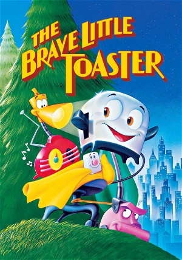

The Brave Little Toaster (1987)
AnimationAdventureFantasyFamily
| Year | 1987 |
|---|---|
| Rating | US:G / US:Rated G |
| Genre | Animation, Adventure, Fantasy, Family |
A group of dated appliances, finding themselves stranded in a summer home that their family had just sold, decide to seek out their eight year old 'master'.